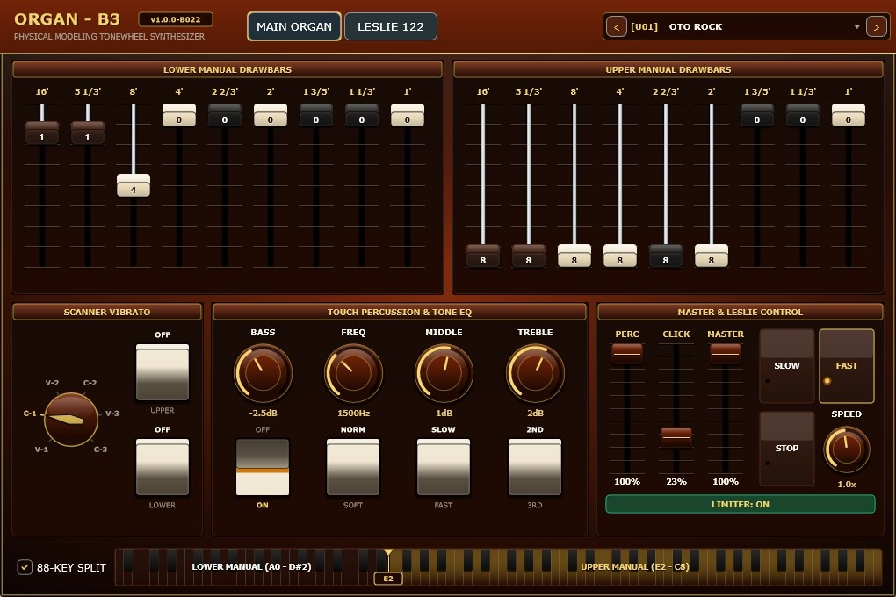

ORGAN-B3
至高のレスリーサウンド
サンプル容量ゼロ。91個の機械式トーンホイール、9接点キークリック、AO-28真空管歪み、そして慣性加速するデュアルローター・レスリーをリアルタイム物理演算で完全再現。鍵盤に触れた瞬間、ヴィンテージの咆哮が解き放たれます。
ORGAN-B3 2-TAB CONSOLE & ROTARY DECK

MAIN コンソール：9ドローバー＆トーンホイール制御
88-KEY SPLITTABLE MANUALS // 12 FACTORY PRESETSアッパー／ロアー独立ドローバー、2nd/3rdハーモニック・タッチパーカッション、18段LCスキャナー・ビブラート/コーラス（V1-3 / C1-3）、AO-28真空管ドライブと4バンドTone EQを一画面で自在に操作できます。
8 FEATURE HIGHLIGHTS // 機能ハイライト
1950〜60年代トーンホイール・オルガンとロータリーキャビネットの電気機械的メカニズムを完全に数値物理化した8つの核心。
91同期トーンホイール＆クロストーク
60Hz同期モーター歯車比を厳密再現した91個のトーンホイールを搭載。隣接ホイールの磁気漏れ（-40〜-12dB）や経年チューニングドリフト（±50ct）までシミュレートします。
9接点バウンス＆位相依存キークリック
1鍵ごとに独立した9つの機械的接点と微細バウンス（0.5〜3.0ms）を演算。打鍵瞬間のトーンホイール位相に応じた生々しい本物のキークリックを生みます。
AO-28＆6550真空管ADAAオーバードライブ
12AX7/12AU7によるAO-28プリアンプと6550パワーアンプをカソードバイアス・電源サグ込みで回路モデリング。1次ADAA＋2倍オーバーサンプリングでヒリヒリとした極上の歪みを実現。
デュアルローター＆3種キャビネット
122 Gentle / 147 Vintage / PR-40 Stationaryの3種を搭載。ホーン（0.8秒）とドラム（4.5秒）の独立した慣性加速・空気抵抗・ドップラー周波数偏移を精密に再現します。
デュアルマイク＆2D平面ドラッグ配置
中域にパンチのあるダイナミック（SM57系）と広帯域コンデンサー（U87系）を選択可能。俯瞰2Dビュー上でマイク距離（0.2〜2.0m）と開き角（0°〜180°）をリアルタイムにドラッグ配置できます。
18段LCスキャナー・ビブラート/コーラス
18段LCラダー遅延線と約6.87Hz（412 RPM）で回転する16プレート静電容量スキャナーを再現。V-1〜V-3 / C-1〜C-3をアッパー／ロアー独立でルーティング可能です。
タッチパーカッション＆4バンドEQ
RCコンデンサ放電（Fast 120ms / Slow 650ms）とシングルトリガー・レガート特性を持つ2nd/3rdパーカッションに加え、パッシブ設計の4バンドTone EQを統合。
12種レジェンド・レジストレーション
ビバップ・ジャズ（88 8000 000）からハードロック咆哮（88 8800 008）、ゴスペル、ソウル、大聖堂パイプオルガン風まで12種の即戦力プリセットと無制限ユーザー保存（.b3preset）を搭載。
ZERO-SAMPLE ELECTROMECHANICAL SIMULATION // 内部DSPアーキテクチャ
大容量サンプルを再生するのではなく、歯車回転・接点バウンス・LC遅延線・真空管非線形特性・空気力学ドップラー効果までをすべてC++20リアルタイム数値物理で統合演算しています。
同期トーンホイール＆マルチバス接点行列
91個のトーンホイールが常に回り続け、打鍵の瞬間に9接点それぞれが微小な時間差とバウンスを伴って導通。波形位相に完全に依存した生きたアタックと磁気クロストークが重なり合います。
LCスキャナー＆ADAA真空管アンプ
18段LCラダーによる位相分散コーラスを経由し、AO-28プリアンプと6550パワー段へ入力。反微分アンチエイリアシング（ADAA）＋ポリフェーズ2倍オーバーサンプリングにより折り返し雑音のない鋭い歪みを得ます。
ドップラー流体ロータリー＆ゼロ確保設計
ホーンとドラムの慣性モーメント、キャビネット空洞共鳴、2Dマイク座標までの伝搬遅延（ドップラー効果）をリアルタイム演算。オーディオスレッド内のヒープ確保・ロックゼロを徹底しています。
YOUTUBE SHOWCASE // 映像デモンストレーション
ORGAN-B3 // OFFICIAL DEMO & ROTARY SOUND VIDEO
現在デモンストレーション動画を準備中です。リリースと同時にYouTubeプレイヤーが公開されます。
動作環境・システム要件（Windows 64-bit / VST3）
本プラグインは Windows 10 / 11 (64-bit / AVX2推奨) のVST3ホスト（Ableton Live等）およびStandaloneに対応。ORGAN-B3.vst3 を C:\Program Files\Common Files\VST3\ へコピーするだけで即座に動作します。